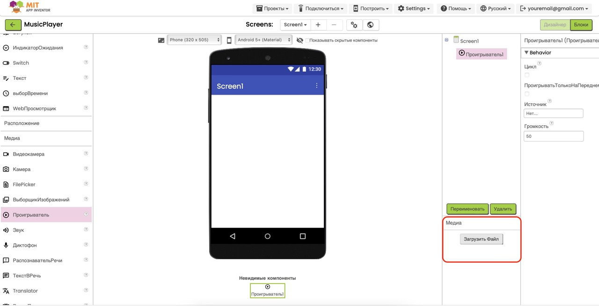

Проект "Лабиринт приключений"
Цель: Создать интерактивную игру-лабиринт, в которой игрок управляет персонажем с помощью кнопок направления и должен найти выход из лабиринта.
Этот проект научит вас создавать элементы управления, работать с координатами объектов и добавлять игровую логику. Отличный шаг для тех, кто хочет создавать собственные игры на MIT App Inventor.
Чему вы научитесь:
- Создавать элементы управления для игры
- Работать с фоновыми изображениями и спрайтами
- Программировать движение объекта по координатам
- Добавлять условия победы в игре
1
Подготовка ресурсов
2
Создание интерфейса
3
Программирование движения
4
Условие победы и тестирование
Шаг 1: Подготовка ресурсов
- Откройте MIT App Inventor и создайте новый проект с названием "MazeAdventure".
-
Для этого проекта нам понадобятся следующие ресурсы:
- Изображение лабиринта - фон с изображением лабиринта
- Изображение персонажа - небольшой спрайт, который будет перемещаться по лабиринту
-
Скачайте необходимые ресурсы из нашего
центра загрузок
в разделе "Ресурсы и материалы".
- Найдите и скачайте ZIP-архив "maze_resources.zip", в котором содержатся все необходимые файлы для проекта
- Распакуйте архив - внутри вы найдёте файл изображения лабиринта "maze_background.png" и изображение персонажа "character.png"
- Теперь эти файлы готовы для загрузки в ваш проект MIT App Inventor
-
Загрузите скачанные файлы в ваш проект MIT App Inventor:
- В правой панели "Media" (Медиа) нажмите кнопку "Upload File..." (Загрузить файл...)
- Выберите и загрузите сначала файл "maze_background.png"
- Повторите процесс для файла "character.png"

- После загрузки вы увидите оба файла в списке медиа-ресурсов вашего проекта.

Совет: Если вы хотите создать собственное
изображение лабиринта, убедитесь, что стены имеют четкие границы и
достаточную ширину, чтобы персонаж не мог "перепрыгнуть" через
них. Также оставьте четкий путь от начала до конца лабиринта.
Важно: Изображение персонажа должно быть
достаточно маленьким (рекомендуется размер около 40x40 пикселей),
чтобы он мог проходить по коридорам лабиринта. Также лучше
использовать изображение с прозрачным фоном (формат PNG).
Шаг 2: Создание интерфейса игры
Важное замечание! Перед началом создания
интерфейса измените вид устройства на "Tablet" (Планшет). Для
этого нажмите на кнопку "Phone" в верхней части экрана, затем
выберите "Tablet". Это необходимо, чтобы все элементы игры были
хорошо видны и игра была удобной для управления.
-
Создадим игровое поле и элементы управления. Начнем с настройки
экрана:
- В списке компонентов выберите Screen1
- В свойствах Title введите "Лабиринт приключений"
- Установите ScreenOrientation в значение "Portrait" (портретная ориентация)
-
Добавим компонент Canvas для игрового поля:
- В разделе Drawing and Animation (Рисование и анимация) найдите компонент Canvas (Холст)
- Перетащите его на экран приложения
- В свойствах установите Width (Ширина): Fill parent
- Установите Height (Высота): 200 пикселей (или другое подходящее значение)
- В свойстве BackgroundImage выберите загруженный файл "maze_background.png"
-
Добавим спрайт персонажа:
- В разделе Drawing and Animation найдите компонент ImageSprite (Спрайт изображения)
- Перетащите его на Canvas1
- В свойстве Picture выберите загруженный файл "character.png"
- Установите Width и Height: 40 пикселей (или другой подходящий размер)
- Установите начальные координаты X и Y для позиции старта в лабиринте (например, X: 10, Y: 110)
-
Теперь создадим более удобную структуру для кнопок управления с
помощью табличного расположения:
- В разделе Layout (Макет) найдите компонент TableArrangement (Табличное расположение)
- Перетащите его на экран под Canvas1
- В свойствах установите Rows (Строки): 3 и Columns (Столбцы): 3
- Установите Width (Ширина): Fill parent и Height (Высота): Automatic
-
Добавим кнопки управления в таблицу:
- В разделе User Interface (Пользовательский интерфейс) найдите компонент Button (Кнопка)
-
Перетащите кнопку в ячейку таблицы (строка 1, столбец 2) -
это верхняя центральная ячейка:
- Text (Текст): "↑" (стрелка вверх)
- Width (Ширина): 60 пикселей
- Height (Высота): 40 пикселей
- FontSize (Размер шрифта): 24
- Shape (Форма): округлая (round)
- BackgroundColor (Цвет фона): выберите цвет на ваш вкус
- Аналогично добавьте кнопку "←" (влево) в ячейку (2,1) - строка 2, столбец 1
- Добавьте кнопку "↓" (вниз) в ячейку (3,2) - строка 3, столбец 2
- Добавьте кнопку "→" (вправо) в ячейку (2,3) - строка 2, столбец 3
- Теперь у вас должна получиться крестовина из кнопок с пустыми ячейками по углам

-
Добавим невидимый компонент для отображения сообщения о победе:
- В разделе User Interface найдите компонент Notifier
- Перетащите его на экран (он появится в разделе "Non-visible components")
Совет по дизайну: Вы можете создать более
привлекательные кнопки, используя изображения стрелок вместо
символов. Для этого загрузите изображения стрелок в ваш проект и
используйте свойство Image у кнопок вместо
текста.
Совет по удобству: Табличное расположение
(TableArrangement) даёт большую гибкость и точность при размещении
кнопок управления. Вы можете легко настроить положение каждой
кнопки, изменяя значения Row (строка) и Column (столбец). Это
особенно удобно для создания крестовины управления, как в нашей
игре.
Шаг 3: Программирование движения персонажа
- Перейдите во вкладку Blocks (Блоки) для программирования логики игры.
-
Сначала определим переменную шага для перемещения:
- В левой панели выберите раздел Variables (Переменные)
- Нажмите Initialize global name to для создания глобальной переменной
- Назовите переменную stepSize и установите начальное значение 10
-
Теперь запрограммируем действие кнопки "Вверх":
- В левой панели найдите компонент Button1 (кнопка со стрелкой вверх)
- Выберите блок when Button1.Click - это событие, которое будет происходить при нажатии кнопки
- Перетащите этот блок в рабочую область
- В категории ImageSprite1 найдите блок set ImageSprite1.Y to
- Перетащите этот блок внутрь блока when Button1.Click
- В категории Math найдите блок операции вычитания (-) и перетащите его в поле значения Y
- В левую часть блока вычитания поместите блок ImageSprite1.Y
- В правую часть блока вычитания поместите блок get global stepSize
-
Аналогично запрограммируем кнопку "Вниз" (Button2):
- Создайте блок when Button2.Click
- Внутри используйте set ImageSprite1.Y to
- Используйте блок сложения (+) вместо вычитания
- Добавьте ImageSprite1.Y и get global stepSize
-
Запрограммируем кнопку "Влево" (Button3):
- Создайте блок when Button3.Click
- Внутри используйте set ImageSprite1.X to
- Используйте блок вычитания (-) и добавьте ImageSprite1.X и get global stepSize
-
Запрограммируем кнопку "Вправо" (Button4):
- Создайте блок when Button4.Click
- Внутри используйте set ImageSprite1.X to
- Используйте блок сложения (+) и добавьте ImageSprite1.X и get global stepSize

Совет по улучшению: Для более плавного управления
вы можете добавить обработку событий TouchDown и
TouchUp для кнопок, чтобы персонаж двигался, пока
кнопка нажата, и останавливался при отпускании.
Важно! В данной реализации персонаж может
проходить через стены лабиринта, так как мы не добавили проверку
столкновений. Для более сложной игры можно добавить обработку
столкновений, используя свойство CollidingWith и
дополнительные спрайты для стен.
Шаг 4: Добавление условия победы и тестирование
- Добавим проверку условия победы, когда персонаж достигает определенной точки (выхода из лабиринта).
-
Сначала создадим глобальные переменные для координат выхода:
- В разделе Variables создайте глобальную переменную exitX и установите значение, соответствующее X-координате выхода из вашего лабиринта (например, 270)
- Аналогично создайте переменную exitY и установите значение Y-координаты выхода (например, 250)
- Создайте переменную winDistance со значением 20 - это будет допустимое расстояние до точки выхода для победы
-
Создадим процедуру для проверки победы:
- В разделе Procedures выберите to procedure и создайте процедуру с именем checkWin
- В категории Control найдите блок if then и перетащите его в процедуру
- В категории Logic найдите блок сравнения < (меньше) и перетащите его в условие if
- В категории Math найдите блок функции sqrt (квадратный корень) и поместите его в левую часть сравнения
- Внутри блока квадратного корня поместите блок сложения (+)
- В первую часть сложения поместите операцию возведения в степень: Math power с первым аргументом - разницей между X персонажа и X выхода, и вторым аргументом - числом 2
- Аналогично во вторую часть сложения поместите операцию возведения в степень с разницей между Y персонажа и Y выхода
- В правую часть сравнения поместите блок get global winDistance
- Внутри блока then добавьте блок call Notifier1.ShowAlert с сообщением "Поздравляем! Вы нашли выход из лабиринта!"
-
Теперь нужно вызывать эту процедуру после каждого перемещения
персонажа:
- Добавьте блок call checkWin в конце каждого обработчика нажатия кнопок (после изменения координат X или Y)
-
Протестируйте ваше приложение:
Запустите приложение на устройстве или эмуляторе, используя один из способов тестирования, описанных в нашем введении в MIT App Inventor.- Управляйте персонажем с помощью кнопок направления
- Проведите персонажа через лабиринт к выходу
- Когда персонаж достигнет точки выхода, появится сообщение о победе

Советы по улучшению игры:
- Добавьте счетчик шагов, чтобы игрок стремился пройти лабиринт за минимальное количество ходов
- Добавьте таймер, ограничивающий время прохождения лабиринта
- Реализуйте проверку столкновений со стенами, чтобы персонаж не мог проходить сквозь них
- Добавьте несколько уровней с разными лабиринтами
- Включите звуковые эффекты для шагов, столкновений и победы
Поздравляем! Вы успешно создали игру "Лабиринт
приключений"! Эта игра демонстрирует основные принципы разработки
игр в MIT App Inventor: управление персонажем, определение игровых
условий и взаимодействие с пользователем. Теперь вы можете
расширить эту игру, добавив новые функции и уровни, или
использовать полученные знания для создания собственных игровых
проектов.
Скачать проект
Если у вас возникли сложности, вы можете скачать готовый файл проекта в нашем центре загрузок:
Перейти в центр загрузок